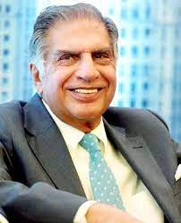
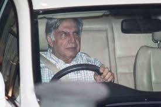
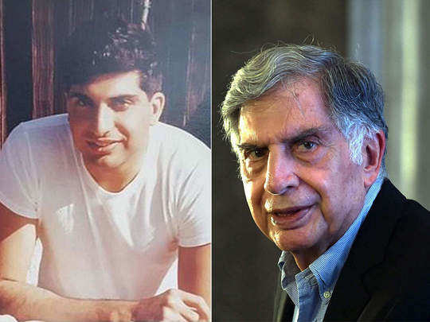

When he was
young
Ratan Naval Tata
Chairman Emeritus, Tata Sons and Tata Group
Profession(s): Industrialist, Investor, Philanthropist
Age: 85
Early Life
Ratan Tata was born in Bombay, now Mumbai, during the British Raj, on 28 December 1937. He is the son of
Naval Tata,
who was born in Surat and later adopted into the Tata family, and Sooni Tata, the niece of Tata group
founder Jamsetji
Tata. Tata's biological grandfather, Hormusji Tata, was a member of the Tata family by blood. In 1948,
when Tata was 10,
his parents separated, and he was subsequently raised and adopted by Navajbai Tata, his grandmother and
widow of Ratanji
Tata. He has a younger brother Jimmy Tata[8] and a half-brother, Noel Tata, from Naval Tata's second
marriage with
Simone Tata, with whom he was raised. His first language is Gujarati.
Career
In the 1970s, Tata was given a managerial position in the Tata group. He achieved initial success by
turning the
subsidiary National Radio and Electronics (NELCO) around, only to see it collapse during an economic
slowdown.
In 1991, J. R. D. Tata stepped down as chairman of Tata Sons, naming him his successor. Initially, Tata
faced stiff
resistance from the heads of various subsidiaries, who had a large amount of operational freedom under
the senior Tata's
tenure. In response, Tata implemented a number of policies designed to consolidate power, including the
implementation
of a retirement age, having subsidiaries report directly to the group office, and requiring subsidiaries
to contribute
their profit to building the Tata group brand. Tata prioritised innovation and delegated many
responsibilities to
younger talent. Under his leadership, overlapping operations between subsidiaries were streamlined
into company-wide
operations, with the group exiting unrelated businesses to take on globalisation
Philanthropy
Tata is a supporter of education, medicine and rural development, and considered a leading
philanthropist in
India. Tata supported University of New South Wales Faculty of Engineering to develop
capacitive
deionization to provide improved water for challenged areas.
Tata Hall at the University of California, San Diego (UC San Diego) is a state-of-the-art research
facility that was
opened in November 2018. The building is named after the Tata Trusts, who donated $70 million to UC San
Diego in 2016 to
establish the Tata Institute for Genetics and Society (TIGS), which is housed within the building.
In 2014, Tata Group endowed the Indian Institute of Technology, Bombay and formed the Tata Center for
Technology and
Design (TCTD) to develop design and engineering principles suited to the needs of people and communities
with limited
resources. They gave ₹950 million to the institute which was the largest ever donation received in its
history.
Tata Trusts under the Chairmanship of Ratan Tata provided a grant of ₹750 million to the Centre for
Neuroscience, Indian
Institute of Science to study mechanisms underlying the cause of Alzheimer's disease and to evolve
methods for its early
diagnosis and treatment. This grant was to be spread over 5 years starting in 2014.
Tata Group, under the leadership of Ratan Tata formed the MIT Tata Center of Technology and Design at
Massachusetts Institute of Technology (MIT) with a mission to address the challenges of
resource-constrained
communities, with an initial focus on India.